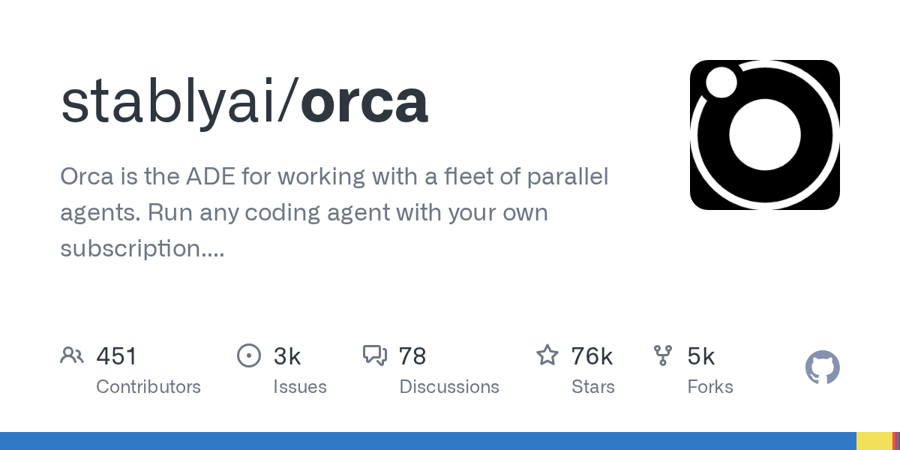

04 GitHub
stablyai/orca
에이전트 다섯 개를 나란히 돌려 비교한다
★ 75,644이번 주 +6,092TypeScriptMIT 사내 사용 가능릴리스 v1.4.207 (09.22)최근 활동 09.23테스트 있음예제 있음AGENTS.md 있음

코딩 에이전트가 많아질수록 성능보다 운영 화면이 더 중요해진다. 누가 어떤 작업을 했는지, 결과를 어떻게 비교할지, 원격 서버와 로컬 PC를 어떻게 오갈지가 핵심이 된다. Orca는 이런 운영 문제를 데스크톱 도구 안에 모아 두려는 저장소다. 모바일 보조 앱과 원격 서버 작업까지 한 묶음으로 다룬다.
무엇을 하는 물건인가
Orca는 여러 코딩 에이전트를 병렬로 돌리고 결과를 비교하는 데스크톱 중심 도구다. 한 지시를 다섯 에이전트에 나눠 보내고, 각 결과를 분리된 작업 공간에서 비교한 뒤 하나를 고를 수 있다. 이 도구가 없으면 창을 여러 개 띄워 각 에이전트를 따로 실행하고, 바뀐 파일과 차이를 손으로 맞춰 봐야 한다. 여러 팀원이 같은 초안을 각자 써 와서 가장 나은 안을 고르는 회의와 닮았다.
스펙과 도입 조건
- 언어는 TypeScript다.
- 설치 형태는 데스크톱 앱이다.
- macOS, Windows, Linux용 빌드를 제공한다.
- Homebrew와 Arch Linux AUR 설치 경로도 있다.
- iOS와 Android용 모바일 보조 앱이 있다.
- 헤드리스 Linux 서버에서 orca serve로 쓰는 가이드를 제공한다.
- 라이선스는 MIT다.
- 최신 릴리스는 v1.4.207이다.
이럴 때 쓰면 좋다
- 야간 배치 점검용 스크립트를 여러 코딩 에이전트에 동시에 맡기고 가장 안정적인 수정안을 고를 때 유용하다.
- 고객사 요구사항으로 바뀐 화면을 에이전트별로 구현해 보고 차이점을 줄 단위로 검토할 때 맞다.
- 원격 개발 서버에서 규정 문서 검색 기능을 만들면서 로컬 PC와 원격 작업을 자주 오가는 팀에 어울린다.
핵심 기능
- 한 프롬프트를 다섯 에이전트에 나눠 보내고 분리된 git worktree에서 결과를 비교할 수 있다.
- 실제 Chromium 창에서 UI 요소를 클릭해 HTML, CSS, 잘린 화면 이미지를 에이전트 프롬프트로 보낼 수 있다.
- GitHub와 Linear 작업을 앱 안에서 보고, diff 줄마다 의견을 달아 에이전트로 되돌릴 수 있다.
왜 지금 주목받나
코딩 에이전트를 한 개가 아니라 여러 개 동시에 돌리는 팀이 늘면서 비교와 검토 자체가 별도 업무가 됐다. Orca는 작업 공간 분리, 원격 서버 연결, 모바일 확인, diff 검토를 한 제품에 묶는다. 지원 대상도 특정 모델이 아니라 터미널에서 실행되는 CLI 에이전트 전반으로 넓다. 이번 패치는 새 검색 결과가 오기 전에 이전 결과가 잠깐 보이던 문제를 고쳤다.
사내 도입 체크
- 개인정보와 사용량 자료 수집, 수집 거부 방법을 별도 문서로 안내한다.
- 외부 API 키가 꼭 필요한지는 확인되지 않는다. 다만 각 에이전트 구독을 사용한다고 적혀 있다.
- 유지보수 주체는 stablyai라는 조직이다.
- 다중 에이전트 비교와 원격 작업을 다루는 상용 개발 도구가 있어 대체 제품은 있다.
주요 용어
원문 정보
제목: stablyai/orca
최근 활동: 2026.09.23
출처 URL: https://github.com/stablyai/orca